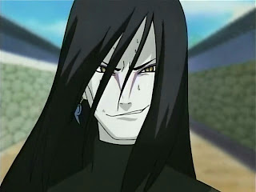

Orochimaru (大蛇丸, Orochimaru) é um dos Lendários Sannin, junto com Tsunade e Jiraiya, de Konohagakure. Com sua ambição de vida sendo aprender todos os segredos do mundo, Orochimaru buscou a imortalidade para que ele pudesse viver todas as vidas necessárias para realizar sua tarefa. Depois de ser pego em flagrante realizando experimentos antiéticos sobre seus concidadãos por causa desta imortalidade, Orochimaru desertou de Konoha, passando a ser perseguido por suas ambições, e por muitos anos procurou a destruição da aldeia, a fim de se vingar e demonstrar o que ele tinha aprendido. Após vivenciar várias mortes durante a busca de seus objetivos, Orochimaru percebe que sua abordagem é falha ao ver as ações de Kabuto Yakushi, e começa a monitorar as escolhas e ações de seu ex-associado, Sasuke Uchiha.